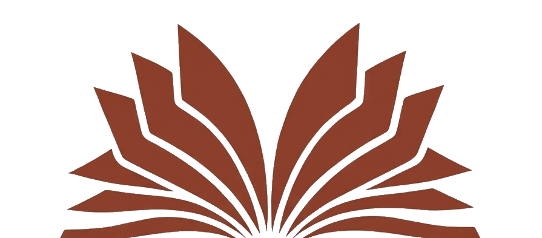

<!doctype html>
<html lang="pt-BR">
<head>
<meta charset="utf-8"/>
<!-- Modo de exibição: instalado (standalone) mantém a cara de app; no navegador
     vira PÁGINA WEB (sem moldura de celular nem barra "9:41"). Fica FORA do bloco
     de desvio acima de propósito — assim sobrevive ao gerar o Marginalia.html. -->
<script>
(function () {
  try {
    var standalone = (window.matchMedia && window.matchMedia('(display-mode: standalone)').matches)
      || window.navigator.standalone === true;
    document.documentElement.classList.add(standalone ? 'standalone-mode' : 'web-mode');
  } catch (e) {}
})();
</script>
<meta name="viewport" content="width=device-width, initial-scale=1, viewport-fit=cover, user-scalable=no"/>
<title>Marginália — clube de leitura</title>
<meta name="description" content="Um clube pessoal de leitura profunda. Notas à margem, pontes entre obras e círculos de leitura com amigos."/>

<!-- pré-visualização ao compartilhar (WhatsApp/redes) -->
<meta property="og:title" content="Marginália — clube de leitura"/>
<meta property="og:description" content="Um clube pessoal de leitura profunda. Notas à margem, pontes entre obras e círculos de leitura com amigos."/>
<meta property="og:image" content="https://maritlopes.github.io/marginalia/icon-512.png"/>
<meta property="og:type" content="website"/>

<!-- PWA -->
<link rel="manifest" href="manifest.json">
<meta name="theme-color" content="#EFE8DA" media="(prefers-color-scheme: light)">
<meta name="theme-color" content="#1A1612" media="(prefers-color-scheme: dark)">

<!-- iOS PWA -->
<meta name="apple-mobile-web-app-capable" content="yes">
<meta name="apple-mobile-web-app-status-bar-style" content="default">
<meta name="apple-mobile-web-app-title" content="Marginália">
<link rel="apple-touch-icon" sizes="180x180" href="icon-180.png">
<link rel="apple-touch-icon" sizes="512x512" href="icon-512.png">

<!-- ícone padrão -->
<link rel="icon" type="image/png" sizes="512x512" href="icon-512.png">
<link rel="icon" type="image/png" sizes="180x180" href="icon-180.png">

<!-- fontes -->
<link rel="preconnect" href="https://fonts.googleapis.com">
<link rel="preconnect" href="https://fonts.gstatic.com" crossorigin>
<link href="https://fonts.googleapis.com/css2?family=Fraunces:ital,opsz,wght@0,9..144,400;0,9..144,500;0,9..144,600;1,9..144,400;1,9..144,500&family=Inter:wght@400;500;600;700&family=JetBrains+Mono:wght@400;500&display=swap" rel="stylesheet">

<style>
  html, body {
    margin: 0; padding: 0;
    background: radial-gradient(ellipse 90% 70% at 50% 0%, #F4EEE0 0%, #E7DCC6 55%, #DCD0B6 100%);
    background-attachment: fixed;
    font-family: 'Inter', system-ui, sans-serif;
    color: #2A2620;
    overscroll-behavior: none;
    -webkit-touch-callout: none;
  }
  * { box-sizing: border-box; -webkit-font-smoothing: antialiased; }
  button { font-family: inherit; }

  /* No mobile (≤480px), o app ocupa a tela inteira sem moldura iPhone */
  /* No desktop, mostra a moldura iPhone centralizada para preview */

  #root {
    width: 100vw; min-height: 100vh; min-height: 100dvh;
    display: flex; align-items: center; justify-content: center;
    padding: 24px 16px;
  }

  /* desktop: painel-web limpo (sem moldura de celular) */
  .device-shell {
    position: relative;
    width: 440px; max-width: 100%;
    height: min(920px, calc(100dvh - 48px));
    border-radius: 20px; overflow: hidden;
    background: #F2F2F7;
    box-shadow: 0 20px 60px rgba(42,38,32,0.18), 0 0 0 1px rgba(42,38,32,0.08);
  }

  /* notch/barra do iPhone não aparecem na versão web */
  .dynamic-island, .home-indicator { display: none !important; }

  /* mobile: tela cheia */
  @media (max-width: 480px), (display-mode: standalone) {
    html, body { background: #EFE8DA; }
    #root { padding: 0; }
    .device-shell {
      width: 100vw; height: 100vh; height: 100dvh;
      max-width: none;
      border-radius: 0; box-shadow: none;
    }
  }

  /* ───────────────────────────────────────────────────────────
     MODO WEB (navegador, não instalado): o Marginália vira PÁGINA WEB.
     Sem moldura de celular, sem a barra falsa "9:41" — usável direto no
     Safari como um site (igual à página da Maratona Nobel). O app instalado
     (standalone-mode) NÃO é afetado: mantém a cara de app que ela gosta.
     ─────────────────────────────────────────────────────────── */
  /* esconde a barra "9:41"/ícones no navegador, mantendo um respiro no topo */
  html.web-mode .app-statusbar { padding: 12px 0 0 !important; min-height: 0 !important; }
  html.web-mode .app-statusbar > * { display: none !important; }

  /* wrapper de rolagem do conteúdo (transparente no celular; vira flex no desktop) */
  .app-scroll { height: 100%; }

  /* tablet em modo web: coluna de página, cheia de altura, sem caixa de aparelho */
  @media (min-width: 481px) {
    html.web-mode, html.web-mode body { background: #E7DECB; }
    html.web-mode #root { padding: 0; align-items: stretch; }
    html.web-mode .device-shell {
      width: 100%; max-width: 460px; margin: 0 auto;
      height: 100dvh; min-height: 100dvh;
      background: #EFE8DA;
      border-radius: 0;
      box-shadow: 0 0 0 1px rgba(42,38,32,0.06);
    }
  }

  /* desktop largo em modo web: FRAME DE SITE — menu no topo (WebNav), coluna mais
     larga, sem a barra de baixo. O React mostra o WebNav e esconde a TabBar. */
  @media (min-width: 768px) {
    html.web-mode .device-shell { max-width: 780px; }
    html.web-mode .device-inner { display: flex; flex-direction: column; }
    html.web-mode .app-scroll { flex: 1; min-height: 0; height: auto; overflow: auto; position: relative; }
    html.web-mode .app-statusbar { display: none !important; }  /* o topo agora é o WebNav */
  }

  ::-webkit-scrollbar { width: 4px; height: 4px; }
  ::-webkit-scrollbar-thumb { background: rgba(42,38,32,0.15); border-radius: 999px; }
  ::-webkit-scrollbar-track { background: transparent; }
</style>
</head>
<body>

<div id="root"></div>

<!-- React + Babel CDN — para uso em produção real, pré-compilar via build (Vite) -->
<script src="https://unpkg.com/react@18.3.1/umd/react.production.min.js" crossorigin="anonymous"></script>
<script src="https://unpkg.com/react-dom@18.3.1/umd/react-dom.production.min.js" crossorigin="anonymous"></script>
<script src="https://unpkg.com/@babel/standalone@7.29.0/babel.min.js" crossorigin="anonymous"></script>
<!-- Supabase — sincronização na nuvem (Fase 1) -->
<script src="https://cdn.jsdelivr.net/npm/@supabase/supabase-js@2"></script>

<!-- camadas compartilhadas (mesmas do canvas de design) -->
<!-- scripts injetados com cache-bust por URL versionada -->
<script>
(function () {
  const APP_VERSION = '0.93.0'; // bump quando alterar JSX
  window.APP_VERSION = APP_VERSION;
  const files = [
    'lib/sources.jsx',
    'lib/storage.jsx',
    'lib/i18n.jsx',
    'lib/share.jsx',
    'tokens.jsx',
    'data.jsx',
    'frames/ios-frame.jsx',
    'home-variants.jsx',
    'screens.jsx',
    'lib/cloud.jsx',
  ];
  for (const f of files) {
    const s = document.createElement('script');
    s.type = 'text/babel';
    s.src = f + '?v=' + APP_VERSION;
    document.body.appendChild(s);
  }
})();
</script>

<script type="text/babel">
// ─────────────────────────────────────────────────────────────
// Marginalia — App real, full-window, PWA-ready
// Diferenças vs. Clube de Leitura.html (canvas):
//   - Sem header/footer/canvas — só o app
//   - Prefs persistem em localStorage
//   - Notas, livros, progresso podem persistir (próxima fase)
// ─────────────────────────────────────────────────────────────

function applyAccent(accent) {
  const map = {
    terracotta: { terra: '#B0533A', terraDeep: '#8E3E2A' },
    olive:      { terra: '#5E6B3E', terraDeep: '#434E2A' },
    ochre:      { terra: '#C48A2C', terraDeep: '#8E6418' },
  };
  Object.assign(window.T, map[accent] || map.terracotta);
}

// Frame — móldura iPhone no desktop, fullscreen no mobile
function DeviceShell({ children, dark = false }) {
  return (
    <div className="device-shell" style={{ background: dark ? '#000' : '#F2F2F7' }}>
      {/* dynamic island — escondido no mobile via CSS */}
      <div className="dynamic-island" style={{
        position: 'absolute', top: 11, left: '50%', transform: 'translateX(-50%)',
        width: 126, height: 37, borderRadius: 24, background: '#000', zIndex: 50,
      }}/>
      <div className="device-inner" style={{ width: '100%', height: '100%', position: 'relative' }}>
        {children}
      </div>
      {/* home indicator — escondido no mobile via CSS */}
      <div className="home-indicator" style={{
        position: 'absolute', bottom: 8, left: '50%', transform: 'translateX(-50%)',
        width: 139, height: 5, borderRadius: 100,
        background: dark ? 'rgba(255,255,255,0.7)' : 'rgba(0,0,0,0.25)',
        zIndex: 60, pointerEvents: 'none',
      }}/>
    </div>
  );
}

// Splash screen — aparece no boot, fade out após ~1.5s
function Splash({ visible }) {
  return (
    <div style={{
      position: 'absolute', inset: 0, zIndex: 200,
      background: '#F4EFE6',
      display: 'flex', flexDirection: 'column', alignItems: 'center', justifyContent: 'center',
      opacity: visible ? 1 : 0,
      transition: 'opacity 600ms ease',
      pointerEvents: visible ? 'auto' : 'none',
    }}>
      
    </div>
  );
}

// WebNav — cabeçalho de SITE (logo + menu no topo), só no navegador desktop (modo web).
// Substitui a barra de baixo (cara de app) para o Marginália parecer uma página web.
function WebNav({ active = 'home', onClick = () => {}, dark = false }) {
  const items = [
    { id: 'home', label: 'Hoje' },
    { id: 'library', label: 'Biblioteca' },
    { id: 'desafios', label: 'Desafios' },
    { id: 'grupos', label: 'Grupos' },
  ];
  const bg = dark ? '#1A1612' : '#F7F1E4';
  const border = dark ? 'rgba(255,255,255,0.08)' : '#E3D9C4';
  const ink = dark ? '#F7E7D6' : '#2A2620';
  const muted = dark ? 'rgba(247,231,214,0.55)' : '#9A8E7B';
  const terra = '#B0533A';
  return (
    <div className="web-nav" style={{
      flexShrink: 0, display: 'flex', alignItems: 'center', justifyContent: 'space-between',
      padding: '0 24px', height: 62, background: bg, borderBottom: `1px solid ${border}`,
      position: 'relative', zIndex: 30,
    }}>
      <button onClick={() => onClick('home')} style={{
        display: 'flex', alignItems: 'center', gap: 10, background: 'transparent', border: 0, cursor: 'pointer',
      }}>
        
        <span style={{ fontFamily: '"Fraunces", Georgia, serif', fontSize: 20, fontWeight: 600, color: terra, letterSpacing: -0.2 }}>Marginália</span>
      </button>
      <div style={{ display: 'flex', alignItems: 'center', gap: 2 }}>
        {items.map(it => (
          <button key={it.id} onClick={() => onClick(it.id)} style={{
            background: 'transparent', border: 0, cursor: 'pointer',
            padding: '8px 14px', margin: 0,
            fontFamily: 'Inter, sans-serif', fontSize: 14.5,
            fontWeight: active === it.id ? 600 : 500,
            color: active === it.id ? ink : muted,
            borderBottom: `2px solid ${active === it.id ? terra : 'transparent'}`,
          }}>{it.label}</button>
        ))}
        <button onClick={() => { if (typeof window.__openAccount === 'function') window.__openAccount(); }}
          aria-label="Sua conta" title="Sua conta" style={{
          marginLeft: 12, width: 34, height: 34, borderRadius: '50%', cursor: 'pointer',
          background: dark ? '#2A2620' : '#EFE6D4', border: `1px solid ${border}`,
          display: 'flex', alignItems: 'center', justifyContent: 'center', color: terra,
        }}>
          <svg width="17" height="17" viewBox="0 0 24 24" fill="none" stroke={terra} strokeWidth="2" strokeLinecap="round" strokeLinejoin="round">
            <path d="M20 21v-2a4 4 0 0 0-4-4H8a4 4 0 0 0-4 4v2"/><circle cx="12" cy="7" r="4"/>
          </svg>
        </button>
      </div>
    </div>
  );
}

// Roteador interno do app
function MarginaliaApp() {
  // hidrata dados live a partir do MG (mescla com seeds)
  if (typeof window._refreshLive === 'function') window._refreshLive();

  const [prefs, setPrefs] = React.useState(() => MG.getPrefs());
  const [route, setRoute] = React.useState('home');
  const [showSplash, setShowSplash] = React.useState(true);

  // splash de boas-vindas: 1.5s, depois fade out
  React.useEffect(() => {
    const t = setTimeout(() => setShowSplash(false), 700);
    return () => clearTimeout(t);
  }, []);
  const [editingBook, setEditingBook] = React.useState(null);
  const [detailBook, setDetailBook] = React.useState(null);
  const [openGrupo, setOpenGrupo] = React.useState(null);
  const [sharingNote, setSharingNote] = React.useState(null);
  const [sharingRec, setSharingRec] = React.useState(null);
  const [editingChallenge, setEditingChallenge] = React.useState(null);
  const [showAccount, setShowAccount] = React.useState(false);
  const [, forceRender] = React.useReducer(x => x + 1, 0);

  // modo web desktop: navegador (não instalado) em tela larga → frame de site (nav no topo)
  const calcWebDesktop = () => {
    try { return document.documentElement.classList.contains('web-mode') && window.innerWidth >= 768; }
    catch (e) { return false; }
  };
  const [webDesktop, setWebDesktop] = React.useState(calcWebDesktop);
  React.useEffect(() => {
    const onR = () => setWebDesktop(calcWebDesktop());
    window.addEventListener('resize', onR);
    return () => window.removeEventListener('resize', onR);
  }, []);

  // expõe re-render global para que Storage.add* possa propagar mudanças à UI
  React.useEffect(() => {
    window.__rerender = () => {
      if (typeof window._refreshLive === 'function') window._refreshLive();
      forceRender();
    };
    window.__editBook = (book) => setEditingBook(book);
    window.__openBook = (book) => { window.__viewBook = book; setDetailBook(book); setRoute('book'); };
    window.__openGrupo = (g) => setOpenGrupo(g);
    window.__shareNote = (note, book) => setSharingNote({ note, book });
    window.__shareRecommendation = (book) => setSharingRec(book);
    window.__editChallenge = (c) => setEditingChallenge(c);
    window.__openAccount = () => setShowAccount(true);
    window.__setRoute = setRoute; // útil para deep-linking e debug
    return () => {
      delete window.__rerender; delete window.__editBook; delete window.__openBook;
      delete window.__openGrupo; delete window.__shareNote; delete window.__shareRecommendation;
      delete window.__editChallenge; delete window.__openAccount; delete window.__setRoute;
    };
  }, []);

  // aplica acento ao carregar e a cada mudança
  React.useEffect(() => { applyAccent(prefs.accent); }, [prefs.accent]);

  // link de convite ?join=código — entra no círculo (se logada) ou guarda para depois
  React.useEffect(() => {
    const code = new URLSearchParams(window.location.search).get('join');
    if (!code) return;
    const t = setTimeout(async () => {
      if (!window.MGCloud || !window.MGCloud.available) return;
      const u = await window.MGCloud.currentUser();
      if (u) {
        const { data, error } = await window.MGCloud.groups.join(code);
        window.history.replaceState({}, '', window.location.pathname);
        if (!error && data) setOpenGrupo(data);
        else setRoute('grupos');
      } else {
        window.__pendingJoin = code;   // após entrar na conta, pré-preenche o código
        setRoute('grupos');
      }
    }, 1600);
    return () => clearTimeout(t);
  }, []);

  const HomeComp = prefs.homeVariant === 'B' ? HomeVariantB
                 : prefs.homeVariant === 'C' ? HomeVariantC
                 : HomeVariantA;

  const body = (() => {
    switch (route) {
      case 'home':      return <HomeComp onNav={setRoute}/>;
      case 'metas':     return <ScreenMetas onNav={setRoute}/>;
      case 'library':   return <ScreenLibrary onNav={setRoute}/>;
      case 'book':      return <ScreenBookDetail book={detailBook} onNav={setRoute}/>;
      case 'note':      return <ScreenNoteEditor onNav={setRoute}/>;
      case 'desafios':  return <ScreenMetas onNav={setRoute}/>;
      case 'grupos':    return <ScreenGruposCloud onNav={setRoute}/>;
      case 'foco':      return <ScreenFoco onNav={setRoute}/>;
      case 'addBook':   return <ScreenAddBook onNav={setRoute}/>;
      default:          return <HomeComp onNav={setRoute}/>;
    }
  })();

  // tab bar ativa em qualquer rota exceto Home (que tem sua própria) e note/addBook (full-screen)
  const showTabs = !['note', 'addBook'].includes(route);
  const showFab = ['home', 'book', 'library'].includes(route);

  // mapa rota → tab ativa no tab bar
  const tabForRoute = {
    library: 'library', book: 'library',
    desafios: 'desafios', metas: 'desafios',
    grupos: 'grupos',
  };

  // PORTA ÚNICA DO APP: quem entrou mas ainda não foi aprovada vê a tela de espera
  if (typeof window !== 'undefined' && window.__appStatus === 'pending' && typeof ScreenAguardandoApp !== 'undefined') {
    return (
      <DeviceShell dark={prefs.mode === 'dark'}>
        <ScreenAguardandoApp/>
      </DeviceShell>
    );
  }

  return (
    <DeviceShell dark={prefs.mode === 'dark'}>
      {webDesktop && showTabs && typeof WebNav !== 'undefined' && (
        <WebNav
          active={tabForRoute[route] || 'home'}
          onClick={(id) => setRoute(id)}
          dark={prefs.mode === 'dark'}
        />
      )}
      <div className="app-scroll">{body}</div>
      {showTabs && !webDesktop && typeof TabBar !== 'undefined' && (
        <TabBar
          active={tabForRoute[route] || 'home'}
          onClick={(id) => setRoute(id)}
        />
      )}
      {showFab && (
        <button
          aria-label="Adicionar livro"
          onClick={() => setEditingBook({})}
          style={{
            position: 'absolute', right: 18, bottom: 96, zIndex: 70,
            width: 52, height: 52, borderRadius: '50%',
            background: '#2A2620', color: '#F7F1E4',
            border: 0, cursor: 'pointer',
            display: 'flex', alignItems: 'center', justifyContent: 'center',
            fontSize: 28, fontWeight: 300, lineHeight: 1, paddingBottom: 4,
            boxShadow: '0 6px 20px rgba(0,0,0,0.25), 0 0 0 1px rgba(247,241,228,0.08)',
          }}
        >+</button>
      )}
      {editingBook !== null && (
        <BookEditorSheet
          book={editingBook.id ? editingBook : null}
          onClose={() => setEditingBook(null)}
        />
      )}
      {openGrupo !== null && (
        <ScreenGrupoDetalheCloud
          grupo={openGrupo}
          onClose={() => setOpenGrupo(null)}
        />
      )}
      {sharingNote !== null && (
        <ShareNoteSheet
          note={sharingNote.note}
          book={sharingNote.book}
          onClose={() => setSharingNote(null)}
        />
      )}
      {sharingRec !== null && typeof ShareRecommendationSheet !== 'undefined' && (
        <ShareRecommendationSheet
          book={sharingRec}
          onClose={() => setSharingRec(null)}
        />
      )}
      {editingChallenge !== null && (
        <ChallengeEditorSheet
          challenge={editingChallenge.id ? editingChallenge : null}
          onClose={() => setEditingChallenge(null)}
        />
      )}
      {showAccount && typeof AccountSheet !== 'undefined' && (
        <AccountSheet onClose={() => setShowAccount(false)}/>
      )}
      <Splash visible={showSplash}/>
    </DeviceShell>
  );
}

// registro do service worker — offline básico + auto-atualização
if ('serviceWorker' in navigator) {
  // Quando um novo service worker assume o controle, recarrega a página uma vez
  // para que a versão recém-publicada entre em vigor automaticamente.
  let _swRefreshing = false;
  navigator.serviceWorker.addEventListener('controllerchange', () => {
    if (_swRefreshing) return;
    _swRefreshing = true;
    window.location.reload();
  });
  window.addEventListener('load', () => {
    navigator.serviceWorker.register('sw.js').then((reg) => {
      // procura atualização a cada abertura; se houver, instala e troca na hora
      reg.update();
    }).catch(() => {
      // service worker é progressive — falha silencia
    });
  });
}

ReactDOM.createRoot(document.getElementById('root')).render(<MarginaliaApp/>);
</script>

</body>
</html>
